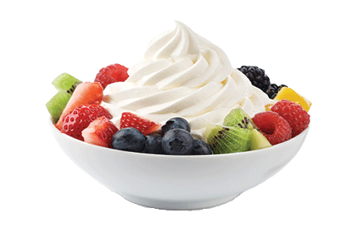
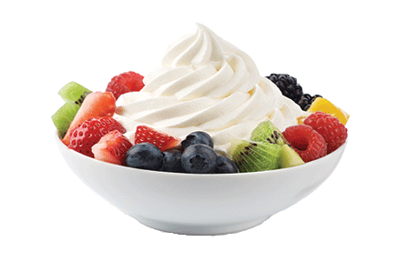

Sản Phẩm Mới
Sữa chua tốt cho sức khỏe

Sữa chua là một loại thực phẩm được tạo ra từ quá trình lên men sữa chua của các vi khuẩn. Hầu hết các loại sữa đều có thể dùng làm sữa chua tuy nhiên sữa bò là sữa được dùng nhiều hơn hết. Sữa chua hay được gọi là yogurt. Chúng được lên men từ sữa động vật nhờ vi khuẩn lactic, đã được khử chất béo và thanh trùng ở nhiệt độ 80-90 độ C. Sữa chua có 2 loại cơ bản là có đường và không đường. Bên cạnh đó còn có loại sữa chua uống, sữa chua men sống. Váng sữa thường được chia 3 loại dựa vào hàm lượng chất béo có trong sản phẩm: váng sữa có hàm lượng chất béo cao nhất (35-50%), và váng sữa thông thường (10-30%), váng sữa nguyên kem (6-15). Xem chi tiết
Góc Thành Viên
Sữa Chua Làm Nhà
Học làm sữa chua tại nhà cùng chuyên gia. Trong thực đơn dinh dưỡng của các bà mẹ cho con trẻ và các thành viên trong gia đình đều không thể thiếu món sữa chua thơm ngon, hấp dẫn và cực kì tốt cho sức khỏe này. Tuy nhiên, đa phần đều chọn mua sữa chua công nghiệp đã được đóng hộp bán sẵn tại các siêu thị và cửa hàng hơn là sữa chua tự làm tại nhà. Như vậy, liệu sữa chua nhà làm và sữa chua công nghiệp thì oại nào tốt cho sức khẻo chúng ta hơn? Nếu là một yêu thích nấu ăn bạn sẽ chọn sữa nhà làm hay mua ngoài. Sữa chua nhà làm đảm bảo độ an toàn, chất lượng cũng như giá thành. Xem chi tiết
Hướng Dẫn Làm Sữa Chua Không Đường
Nguyên liệu làm sũa chua không đường
- 1 lít sữa tươi không đường
- 1 hộp sữa chua men không đường(bạn có thể mua sữa chua đóng hộp như Vinamilk, TH True Milk...)
- Dụng cụ nấu và ủ sữa chua
Các bước thược hiện
- Cho sữa tươi không đường vào nồi, đun nóng lên và khuấy đều, nhẹ tay theo 1 chiều. Tới khi sữa đạt khoảng 40 độ C thì tắt bếp. Bạn có thể dùng tay đề kiểm tra, thấy sữa ấm là ok.
- Đổ hộp sữa chua làm men vào và khuấy đều, múc vào hũ và đem đi ủ 6-8 tiếng
- Sau khi ủ xong thì ăn thử, nếu ok thì bỏ tủ lạnh để ăn dần
Đặt Hàng ngay

Gọi Điện

Đặt Hàng

Nhận Hàng

Thanh Toán